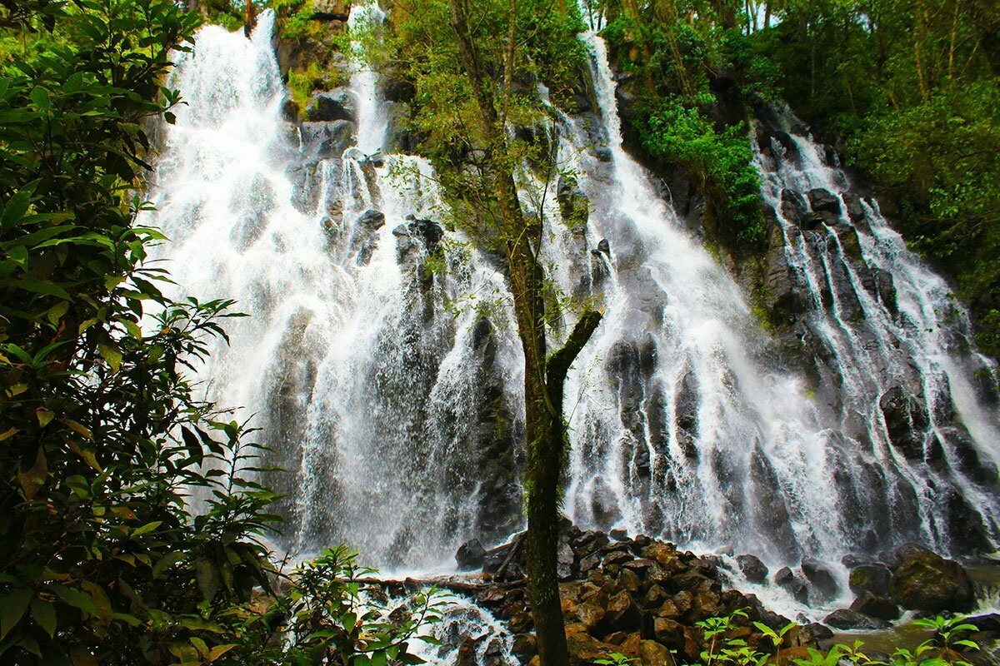
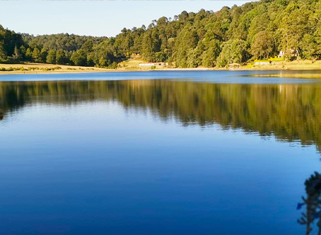

VELO DE NOVIA
El Parque Velo de Novia es una hermosa reserva natural que alberga una cascada de 35 metros de altura. Si decides andar el sendero cuesta abajo, podrás llegar hasta su desembocadura en el lago de Valle de Bravo.
Cuenta la leyenda que una bella mujer estaba por contraer nupcias, pero él nunca llegó al altar. En un acto de profundo dolor y vergüenza, ella se lanzó por el despeñadero de la cascada. Desde entonces, la localidad comenzó a llamarle Velo de Novia.
El parque se encuentra a tan sólo 20 minutos en automóvil desde el embarcadero municipal. Es ideal para una caminata, paseo a caballo, rapel en cascada o para disfrutar de un pícnic en familia o entre amigos. El parque cuenta con servicio de asadores, estacionamiento, cabañas, renta de caballos, miradores, venta de artesanías y antojitos.
La cascada es importante porque atrae visitantes y favorece el turismo de naturaleza en Valle de Bravo. Además, el bosque que la rodea contribuye a la conservación del paisaje natural y ofrece un espacio para la recreación y la convivencia con el medio ambiente.

LAGUNA NEGRA
Es una laguna natural chiquita que está en plena sierra de Valle de Bravo. No es artificial como la presa grande del pueblo.
Cómo es:
Agua oscura, casi negra, de ahí su nombre. Se ve así por la profundidad, el reflejo de los pinos y los taninos de las hojas del bosque.
Está rodeada de bosque cerrado de pino, oyamel y encino. Mucha neblina en la mañana y muy silenciosa.
El agua es fría y no tiene corriente. No es una laguna para deportes acuáticos, es más de contemplación.

Naturaleza:
Hay patos silvestres, ajolotes en la zona y muchas aves pequeñas.
Alrededor crece musgo, helechos y hongos en temporada de lluvias.
Es conocida como un lugar con mucha energia natural, es un lugar 100% natural y protegido, no tiene muelles, ni lanchas ni restaurantes es bosque y laguna nada mas
LA PEÑA
La peña de Valle de Bravo es una enorme formación rocosa ubicada en el municipio de Valle de Bravo, Estado de México.
Es uno de los lugares Naturales mas representativos de la región y se caracteriza por sus grandes rocas,sus pendientes pronunciadas y hermosas vistas del paisaje montañoso.
La peña esta formada principalmente por rocas que han permanecido expuestas durante muchos años a procesos naturales como la lluvia,el viento,flora y fauna.
La vegetación que se encuentra en la peña incluye plantas adaptadas a los suelos rocosos y a las condiciones del clima. Esta zona se pueden encontrarespecies como nopales arbustos silbestres y arboles propios de la región.
En los ambientes naturales de la región habitan especies de animales como aves, reptiles,amphibios y pequeños mamiferos .